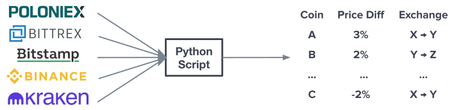
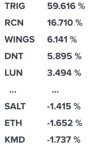
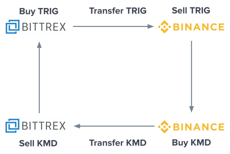

January 2018
The cryptocurrency arbitrage project was inspired by a video by the Coin Mastery Youtube account which suggested that there might be opportunities to arbitrage the cryptocurrency markets (this was circa November 2017) but that it would too difficult to arbitrage manually. This got me thinking that writing a simple script could expose these opportunities. Two or three days later I had set up a script to pull the latest coin pricing data from five cryptocurrency exchanges' API's. From there, it was straightforward to identify significant price discrepancies.
The table in the diagram above provides a generalized example of the script's output. The first row in the table indicates that Coin A can be bought on exchange X, transfered to exchange Y, and can be sold there for a 3% profit.
The table below shows the script's output from January 5th, 2018.
Since it was important for this process to be repeatable, a key principle for me was not just transfering coins from exchange A to B but then transfering a different coin back to A again such that I'd profited over the course of the whole process. The 59% discrepancy between prices for the TRIG coin and the -1.7% discrepancy between prices for the KMD coin provided an excellent opportunity; I could buy TRIG on exchange A, move it to B and sell it there for a 59% profit. I could then buy KMD on B and transfer to it A where I'd then sell it for a 1.7% profit since KMD is valued less on exchange B than on exchange A meaning I could buy it on B and transfer it to A for a profit.
The diagram below illustrates this circular process: buying TRIG on Bittrex, transferring it to Binance and selling it, buying KMD on Binance and tranferring it to Bittrex and selling it.
